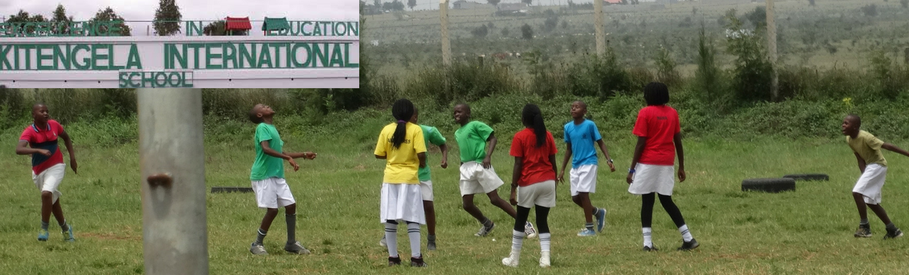

Education has been one of the fundamental key in our country that
any child must gate a right to learn.we therefore provide your student with
quality education that will mould him to be a better person in the future
As a school we do offer various courses in which will help our
students to be better people in future who can reach their desired
goals
french
This is a course in which student start learning when they are
in grade 3.This course will help student to learn french in their
earlier childhood which will be a great advantage in future.They
can be expert in the language and they can take it in future as a
carrier.
sciences
we do offer various sciences courses that is,Environment study,
computer studies and social sciences.This courses will help
the student along way in becoming profficient scientiest in
future
Mathematics
This is a course in which students are taught since they are in
their earlier stage of life and it will be of great advantage for
them in becoming responsible stewards
Humanites
Every human is a spiritual being.Therefore we had develop various
courses like religion education that will help student to acknowledge
the presence of the supernatural being
Vision
“To help our students reach their full potential by equipping them with life skills required to make them successful anywhere within this increasingly competitive and changing world.”
Mission
“Kitengela International School (KISC) strives to provide first class international minded education in a joyful environment that empowers children to achieve academic excellence and high standards of integrity, leadership & responsible citizenship.”
Philosophy
Have models of teaching and learning that are sought out by other schools.
Assume a high level of responsibility for maintaining high ethical standards for the whole KISC community.
Develop and maintain strong relationships with other outstanding educational institutions.
Develop regular review cycles of mission, vision, curriculum and assessment to strengthen best practices and accountability.
Dedicate the resources necessary to realize and sustain vision. Our Pillars
Academic excellence
Identifying and nurturing individual talents
International mindedness
Christian values
Affordability (value for money)
our facilities
As an institution we have various facilities that are for benefitual
of our students and the institution as large
A leading international school library
The library above have various kind books including revision
books,story books,novels ,documentaries and so many other
study materials

The largest play ground
This is the largest play ground around schools in kajiado
county holding national tournament
The most magnificient swimming pool
The swimming pool above act as a cool place in which students
refreshes themselve in their leisure time